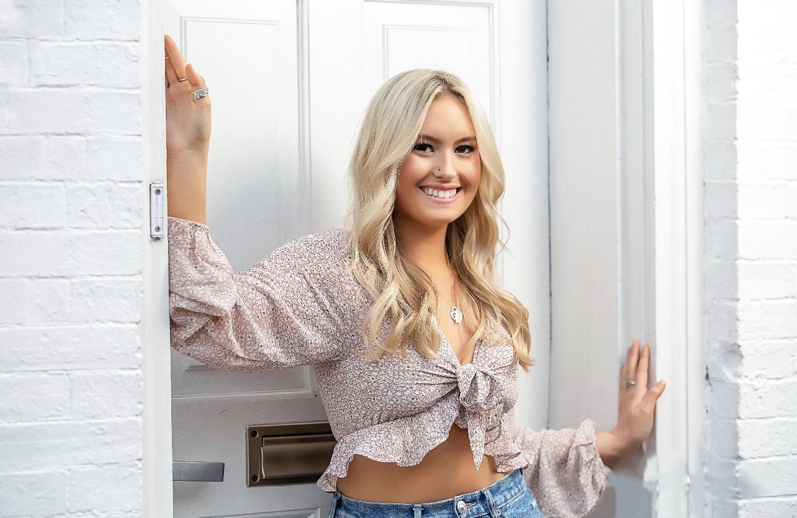

Hannah White
Student

hwhite03@terpmail.umd.edu
LinkedIn: www.linkedin.com/in/hannah-white-962899306
Experience
Freelance Writer
The Southern Maryland Chroncile
2024 - 2024
I pitched ideas, met deadlines, and adapted my writing style to different audiences. I also researched, wrote, and edited five news stories published in the outlet covering a vast amount of topics involving the local community.
Freelance Writer
HerCampus UMD
2023 - 2023
I wrote, researched, and edited an article for the publication. I had to pitch ideas to the editors, meet their deadlines, and adapt to the preferred writing style of the audience.
Education
- Bachelor of Arts, Journalism, University of Maryland, 2026
- Associate of Arts, Intermedia/Multimedia, College of Southern Maryland, N/A
Skills
- Adobe Creative Cloud
- News Writing
- Multitasking
- Presentations
- Social Media